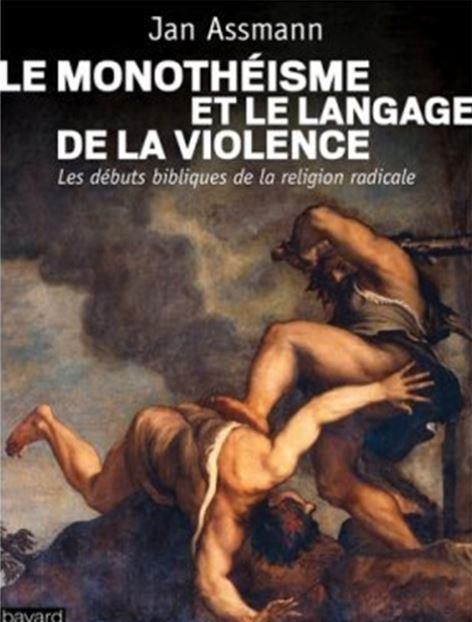
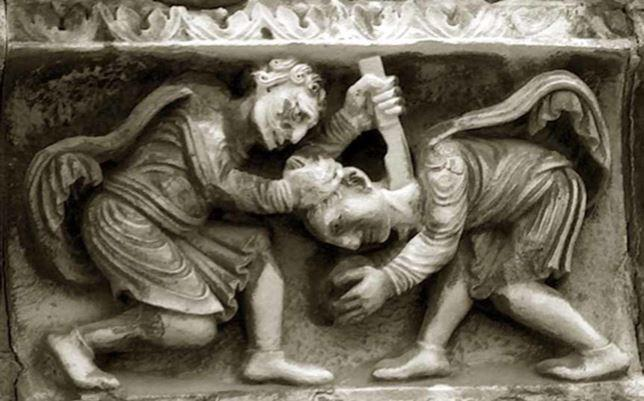
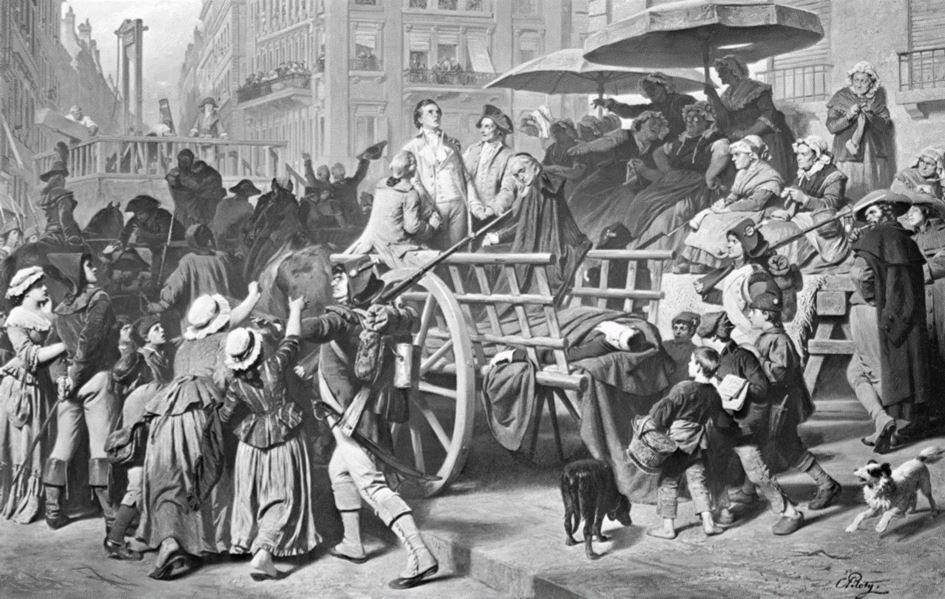
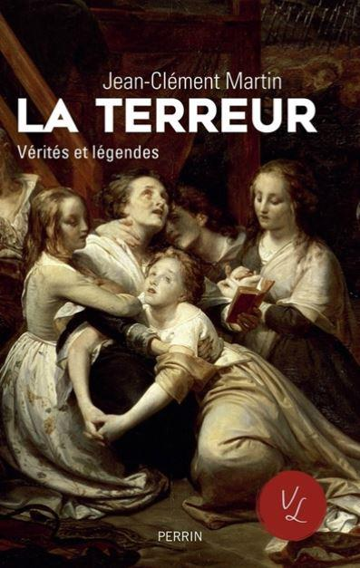

De la violence biblique et romaine à la violence ordinaire d’aujourd’hui, en passant par la Terreur révolutionnaire
par Thierry GUINHUT
Dans la nature, la lutte pour la vie est tissée de mille prédations. Et contrairement au mythe du bon sauvage, les populations primitives étaient capables de s’entretuer au point d’éliminer jusqu’à soixante pour cent de leurs populations aux cours de fières guerres tribales récurrentes. La religion monothéiste peut alors passer pour une fondation idéologique de la violence, telle que pointée par Jan Assmann, quoique, sans la béquille de la religion, la République romaine soit coutumière des massacres, comme le rapporte Nathalie Barrandon. L’Histoire s’est hélas chargée du modèle de la Terreur révolutionnaire pour ne pas nous abandonner à l’absence de leçons et d’avertissements. Ce pourquoi, outre son Anatomie, avec Timothy Tackett, il faudra interroger ses « vérités et légendes » selon Jean-Clément Martin, pour comprendre comment l’on devient terroriste en 1793. Il n’est évidemment pas certain que dans le monde policé de la civilisation d’aujourd’hui nous soyons indemnes de la violence. Qu’elle soit quotidienne, morale ou physique, symbolique ou létale, capitaliste ou terroriste, il importe cependant de distinguer ce qui est tolérable et ce qui ne l’est pas. Et d’interroger avec François Cusset une « logique nouvelle », prétend-il, celle du Déchaînement du monde. Est-ce déjà celle de la Terreur, qu’il s’agisse de terrorisme individuel, idéologique ou théocratique ?
Depuis les rituels d’anéantissement de l’ennemi en ancienne Égypte, et bien que les polythéismes ne les méconnaissent pas, le monothéisme est d’abord une « religion radicale » qui parle « le langage de la violence », nous explique Jan Assmann, dans Le Monothéisme et le langage de la violence. Ce « puritanisme radical » nait dans le Bible hébraïque, quoique bien entendu l’essayiste « n’affirme pas, comme on [lui a] attribué régulièrement, que le monothéisme a introduit la violence et la haine dans un monde jusqu’alors pacifique ». Et malgré le Dieu jaloux, vengeur, « la violence est une question de pouvoir, pas de croyance et de vérité ». Aussi faut-il considérer avec notre essayiste : « La dynamique sémantique que contiennent les textes sacrés des religions monothéistes sert d’explosif non dans les mains des croyants, mais dans celles des fondamentalistes qui sont à la recherche du pouvoir et se servent de la violence religieuse pour entraîner les masses ». Sauf qu’il a des textes religieux plus uniment violents que d’autres. Jan Assmann note d’ailleurs à cet égard, et avec justesse, que « la Bible hébraïque avec sa polyphonie » incarne un pluralisme…
S’appuyant avec précision sur le texte biblique, Jan Assmann offre un essai clair et documenté : il ne s’agit pas pour lui de dédouaner la volonté hégémonique du religieux, qui va jusqu’au massacre ordonné par Moïse, et qui tua trois mille hommes coupables d’avoir adoré le veau d’or, donc une idole. Comme dans le Deutéronome, il faut tuer son frère s’il veut « servir d’autres dieux », donc lorsqu’ils sont en état d’apostasie. Injonction que l’on retrouve d’ailleurs dans d’anciens textes politiques assyriens.
Reste à discuter le concept de « religion radicale » appliqué à la Bible. Si le monothéisme n’est par définition guère ouvert à la concurrence des autres religions, qu’elles soient polythéistes ou autrement monothéistes, celui de Moïse n’est radical que pour son propre peuple et contre ceux qui s’aventurent à se faire leurs ennemis.
Et encore, à l’exception des anciens Zélotes, il a su évoluer : il n’est en rien prosélyte, de plus il s’ouvre au pardon.
Et si le Christianisme se veut universellement prosélyte, sa radicalité ne s’étend absolument pas, si l’on suit le message du Christ, jusqu’à ordonner le meurtre d’autrui en religion, puisqu’il prône l’amour et le pardon. De plus Jan Assmann rapporte le propos de Benoit XVI : « Le christianisme, à la différence d’autres grandes religions n’avait jamais imposé à l’État un droit révélé ». À cet égard ne peut-on considérer que la seule religion radicale qui soit ait pour nom l’Islam, toujours innervée par le Jihad, sa guerre sainte[1] ? Or l’essayiste souhaitant voir la religion comme « seul moyen donné aux hommes pour endiguer la violence », il apparait clairement que des éthiques religieuses soient radicalement antagonistes.
Exclusivement politique, « l’atavisme de la violence romaine » remonte au meurtre fondateur de Rémus par Romulus, comme le fut celui de Caïn par Abel. Nathalie Barrandon dresse un tableau des Massacres de la République romaine terriblement édifiant.
Entre la guerre des Gaules, la destruction de Carthage et les guerres civiles abonde le « meurtre en grand nombre de personnes sans défense ». Prendre une ville, se venger d’un adversaire, propager la terreur suffisent pour passer une population au fil de l’épée. Au point que l’historienne ose employer le terme « génocide », quoiqu’anachronique. Mais il s’agit bien de « nettoyage ethnique ».
Il n’est alors pas question de culpabilité, mais de fierté du vainqueur, du « primat de la victoire », entre le III° et le I° siècle avant Jésus Christ, période où Nathalie Barrandon répertorie « une cinquantaine de tueries ». Ainsi, dans la foulée du fameux « Delenda est Carthago » de Caton l’Ancien, se fonde la légitimité de la figure du tyran, bientôt cependant digne d’être éradiqué s’il s’attaque aux Romains eux-mêmes.
« On glisse sur les dalles rougies par le carnage », dit Lucain, ce qui n’est qu’un prélude au pillage et à l’esclavage. Exhibé, le massacre, parfois cantonné à « l’exécution de élites », doit « être édifiant pour servir d’exemple ». De fait, au contraire de la nôtre, « les sociétés antiques n’étaient pas victimaires ». Et si les massacres ne cessèrent pas pour autant, la fin de la République et l’Empire virent apparaître, en particulier avec Sénèque, le concept de clémence.
L’ouvrage de Nathalie Barrandon, incroyablement documenté, s’appuie sur les historiens romains, Polybe, César, Tite-Live, les poètes, voire sur l’archéologie. Si l’on pense à la grotesque et vulgaire antiphrase « C’est une tuerie », qui se veut aujourd’hui élogieuse, il faut sans nul doute l’appliquer à son livre, qui parcourt l’Histoire ancienne selon une perspective inédite autant que bienvenue
Laïque est la Terreur révolutionnaire, dont le modèle d’ailleurs inspira Lénine[2]. Deux livres tout à fait complémentaires paraissent, détaillant le processus, divulguant « l’anatomie » du monstre historique, pour Timothy Tackett, qui se livre à un récit chronologique fort précis, et en rétablissent ses « vérités et légendes », sous la plume de Jean-Clément Martin.
Incompréhensible parait la distorsion entre l’idéal de liberté de 1789, son parlementarisme, sa séparation des pouvoirs, et la Terreur. Comment a-t-on pu en arriver là ? se demande Timothy Tackett : « Pourquoi une partie significative des élites révolutionnaires, qui venaient de proclamer l’avènement de la tolérance, de l’égalité devant la justice et des droits de l’homme, avaient-elles adopté une culture politique marquée par la violence d’État ? » Les Montagnards et au premier chef Robespierre furent des forcenés de la guillotine et de la fusillade envers les aristocrates et les ecclésiastiques rebelles, envers les soulèvements paysans de l’ouest de et Vendée ; d’où « la barbarie de la guerre civile ».
Si l’on admet que « nombre d’exécutions sous la Républiques ont été liées à la guerre civile et aux insurrections contre l’État […] on ne pouvait justifier le grand nombre de têtes innocentes […] sans l’ombre d’un procès équitable », argue l’historien. L’enthousiasme révolutionnaire était tel que l’intolérance lui devint vite constitutif ; et même si « il n’y eut jamais de plan systématique », la Terreur était implicite. Les prisons regorgeant de « contre-révolutionnaires », un certain Sylvain Godet écrit : « Nous devons être barbares pour le bien de l’humanité, et couper un bras pour sauver le corps », argumentaire repris par les terreurs ultérieures de l’Histoire. Est-ce à dire que la volonté de terreur est explicite ? De plus, Timothy Tackett montre combien « la foule », « le peuple », n’a pas hésité à courir sus aux détenus, massacrer une pléthore de prisonniers, et raccourcir bourgeois et aristocrates, ou prétendus tels. La haine du riche et la tyrannie de l’égalité qui animent les « sans culottes » préfigurent alors Marx et Lénine. En ce marasme, les femmes ne sont pas moins enragées, il est vrai excédées par le coût excessif du pain et autres denrées nécessaires. Quand toutes les hiérarchies sont remises en cause, quand l’État se disloque et perd sa légitimité traditionnelle, démagogues et populaces s’affrontent et s’allient en frappant les boucs émissaires du désordre. Conspirations, trahisons, peurs, factions, tyrannie de la vertu révolutionnaire, tout conspire à la Terreur de 1793 et 1794, jusqu’à ses dernières métastases vengeresses en 1795. Dans le vide du pouvoir de la plupart des révolutions s’engouffrent des dérives imprévues et sanglantes. Rien là de cohérent avec les Lumières, dont la Terreur n’est en rien la conséquence.
« Vérités et légendes », date de naissance et ordre du jour controversés, tout ce qui fait de la Terreur un mythe, un objet de fantasmes, une bataille d’historiens, est mis à plat dans l’ouvrage de Jean-Clément Martin, qui procède de manière thématique, et avec prudence.
Combien sont les victimes de la Terreur ? Parmi la récurrente querelle des chiffres, Jean-Clément Martin les estime ainsi : « entre 500 000 et 600 000 pertes civiles et militaires ». Parler de « Terreur blanche » est en contrepartie un mythe, même si des royalistes en représailles ont joué les « égorgeurs ». Cependant, peu après, Napoléon, ce « Robespierre à cheval », selon Madame de Staël, mena « une Terreur qui ne dit pas son nom ». En outre, selon Jean-Clément Martin, il est excessif de faire de l’objet de son étude « la préfiguration des totalitarismes ». En effet les génocides nazis et communistes étaient programmés, alors que seuls les concours de circonstances, l’impéritie de l’armée républicaine et la rage des révolutionnaires réagissant aux événements sont à l’origine de massacres qui auraient dépassés leurs instigateurs, même si Robespierre et ses comparses furent particulièrement vindicatifs…
N'oublions pas le terme de génocide appliqué à la Vendée et ses 200 000 morts. « La répression, efficace ailleurs, échoue ici » ; ce pourquoi les insurgés ont d’abord l’avantage et sont cependant écrasés. « C’est moins de la Terreur comme institution inexistante que la Vendée a été victime que du vide d’autorité. Inutile de chercher une volonté génocidaire là où les crimes de guerre ont été permis par l’absence de pouvoir ». De là en effet à établir une volonté d’ethnocide il y a loin, même si les prisonniers sont exécutés par milliers, et malgré la déclaration de Barère, le 1er août 1793 : « Plus de Vendée, plus de royauté, plus de Vendée, plus d’aristocratie, plus de Vendée et les ennemis de la République ont disparus ». On entend là un écho du « Delenda est Carthago » de la République romaine.
En notre XXI° siècle menaçant, la rubrique faits divers et terrorisme ordinaire est nourrie de jour en jour d’une pléthore de violences : viols et assassinats d’enfants, violences policières et anti-policières, vandalismes de rue. Terrorismes enfin qui sont des échos du VII° siècle de la péninsule arabique d’une part, et de la révolution d’octobre 1917 d’autre part. En un cocktail de violences, dont le shaker remue dangereusement, des groupuscules, des communautés se jettent les uns contre les autres. Sans parler de la délinquance et de la criminalité courantes, d’anciennes et de nouvelles causes deviennent acharnées : syndicalistes contre patrons et gouvernants, vegans contre bouchers dont ils détruisent les vitrines, banques vandalisées par des anarchistes, locaux de partis politiques saccagés par des antifascistes, tous usant de méthodes miliciennes et fascistes. Sans omettre le sexe, le couteau, le bâillon, le voile et la bombe de la charia et du djihad, violence morale et terroriste…
François Cusset pourrait réunir tous les éléments nécessaires pour produire un bon livre sur ce contemporain. Hélas son Déchaînement du monde est vicié dès les premières lignes par une cécité idéologique de l’œil gauche. Ses exemples proviennent presque tous de la doxa polémique anti-nationaliste, anticapitaliste et tiersmondiste : « manifestation du parti nationaliste » et « coups de couteau », licenciement par les « ressources humaines ». « immigrée clandestine » assujettie au chantage sexuel… Non que ces occurrences soient impossibles bien sûr, mais quid des manifestations d’extrême-gauche qui sont plus nombreuses et plus vandales, des grèves syndicales qui empêchent d’accéder à une embauche ou une salle de concours, des agressions sexuelles par centaines commises par des migrants à Cologne, ce que l’essayiste nie catégoriquement, en un négationnisme outrageux.
Brûler des voitures est « vu dorénavant comme le parangon de l’acte violent ». Or « si on peut le voir ainsi, c'est que ne sont plus pensables comme tels (violents et nihilistes) ni la vitesse du véhicule, ni la puissance de sa mécanique, ni ses effets sur l'environnement, ni l'embouteillage matinal, ni leur impact, à tous, sur l'état psychique du conducteur. Ni la relégation sociale incitant à brûler ce symbole par excellence de la richesse de l’inégalité ». La rhétorique équivaut au pousse au crime !
Un autre exemple, parmi tant d’autres : « la violence systémique de la consommation passait par des objets, désirés et fétichisés ; la contre-violence des insurrections nouvelles fait aussi usage d’objets » : « marteau, pour détruire les claviers des distributeurs de billets de banque », « meuleuse d’angle pour saboter les chaines des engins de chantier » de lignes à haute tension et de TGV… Sauf que l’on est libre de s’abstraire de la plus grande part de la consommation qui n’a rien d’obligatoire, alors que l’on retire à autrui la possibilité de consommer et de construire. Ces lignes électriques et ferroviaires ne sont pas celles des goulags, que l’on sache, si discutables soient-elles…
On appréciera une fois de plus la confusion généralisée, en cette abjecte comparaison entre l’abattage d’animaux (certes discutable et amendable) et la shoah : « On ne voit plus grand monde frapper un chien public, ou pratiquer la chasse en toute saison ; on parque et on abat industriellement pour l'alimentation humaine 140 milliards d'animaux par an.
En d'autres termes, de Hiroshima à Alep, et de la vague brune des années 1930 à la poussée populiste des années 2010, il importe moins de comparer, ni de quantifier, que de comprendre les nouvelles logiques de l'effraction : « la violence à moins reculé que changé de formes ».
La confusion règne entre les violences physiques et celles psychiques. Quant à ces dernières, l’on reconnait aujourd’hui le harcèlement moral par exemple. Est-ce à dire qu’il s’agit d’une « nouvelle logique de la violence », pour reprendre le sous-titre de François Cusset ? Il n’est pas douteux qu’elles existaient autrefois ; rien de nouveau sous le soleil (hors l’utilisation du cyberharcèlement, technologies exigent) mais elles n’étaient guère reconnues, voire pas du tout. Cette « nouvelle logique » est plutôt celle du brouillamini conceptuel de l’essayiste qui ne réussit à convaincre que les plaintifs à l’affut du bouc émissaire « néolibéral », ce qui montre bien qu’au-delà de cette haine de la liberté d’autrui, se profile une justification spécieuse du vandalisme, voire une soif de terrorisme, et, in fine, un désir d’irénique tyrannie.
Pourquoi, nous direz-vous, s’intéresser à un livre aussi peu solide, aussi marécageux, voire aussi dangereux ? Parce qu’il est symptomatique et représentatif d’une confusion victimaire et d’un manque de pouvoir chez de piètres intellectuels qui fantasment la carrure d’un Sartre, quoiqu’ils en aient la hargne. Désireux de lutter contre ce qu’il appelle « la violence-monde » (celle d’être né ?), il se dit cependant détaché du mythe du « grand soir », ce qui montre tout de même une mince lucidité, et pourtant il appelle, quoique avec un point d’interrogation, « une violence émancipatrice ». Il s’agirait de « micro-résistances quotidiennes », de « diagonale de l’action collective ». Pourquoi pas, si la chose n’avait pas un relent de collectivisme délétère. Mais ne serait-ce pas là un trop lointain avatar du libéralisme politique et économique, qui, mieux que les fantasmes de l’essayiste vicié, serait paisiblement appliqué jusqu’aux démarches individuelles et aux libres entreprises et associations ?
Faut-il se demander si la position de François Cusset est celle d’un post-adolescent, enfant gâté de la vie, qui se rend compte que le monde n’est pas conforme à son désir, qu’il n’a pas le pouvoir total dont il rêve pour le bien de l’humanité tel qu’il le conçoit. Aussi trépigne-t-il sur le plancher de son ressentiment, contre tout ce qui n’a pas l’heur de rayonner selon son idéologie brouillonne et finalement totalitaire. Qui sait si elle n’est pas l’ébauche d’un manuel d’une nouvelle Terreur.
Reste que le lisant il est légitime de se poser la question : à partir de quel moment faut-il recourir, et au-delà de l’argumentation libérale, à la violence pour débarrasser l’humanité de ce que l’on considère comme une tyrannie abjecte ?
À condition de bien savoir considérer… Car les démagogues n’aiment rien tant que de proclamer la souveraineté de la rue, inaugurer le règne de l’émeute[3], en prétendant tirer les marrons du feu pour le peuple, en définitive à leur profit.
François Cusset n’est-il pas en train de légitimer ces Blacks blocs post-anarchistes qui considèrent la violence de rue, c’est-à-dire les émeutes, les pillages et le vandalisme de magasins et d’agences bancaires comme un acte symbolique et un devoir d’éradication du capitalisme. Notons qui sont quelques-uns de ces Blacks blocs, arrêtés lors des violences en marge de la manifestation parisienne du 1er mai : cinq hommes et une femme poursuivis pour « participation à un groupement formé en vue de commettre des violences ou dégradations ». Le visage cagoulé, dans leurs sacs, pierres, ciseaux, masses, masques de piscines. L’un est diplômé de l'École centrale, consultant, dont le salaire mensuel s'élève à 4 200 euros. L’un est fils de chercheur au CNRS, l’autre fille de directeur financier[4]. Une fois de plus des enfants gâtés, que la défaillance d’éducation, pas seulement parentale, mais intellectuelle, sociétale, économique et philosophique, conduit à retrouver l’atavisme violent de l’humain, en-deçà de toute pulsion civilisationnelle, joueurs enragés embarqués par ce qui aurait pu être un fondamentalisme religieux et qui n’est au fond qu’un fondamentalisme anticapitaliste hormonal.
L’antifascisme à cet égard fonctionne comme une argutie : alors qu’il n’y a plus guère de régimes fascistes sur la planète (hors les fascismes rouges et verts) cet antifascisme est le masque de la terreur en gestation et prolifération aux mains des post-anarchistes et post-communistes révolutionnaires offensifs. Comme l’ancienne Carthage, le capitalisme qui fait notre prospérité et notre liberté, y compris concurrentiellement contre ses propres erreurs, doit-il être détruit par des révolutionnaires en manque de Terreur ?
La violence sacrée du monothéisme, supportée par Dieu, peut-elle se muer en violence sécularisée ? Évidemment oui, parce qu’elle a pour même origine, la pulsion humaine trop humaine : cet atavisme du mal[5], ce goût sucré de la violence. Aussi, au-delà de toutes les occurrences historiques, l’exemple emblématique est-il la Terreur révolutionnaire, la seule à être entaché d’une noble majuscule de sang au nom du Bien républicain, la seule à conjuguer la violence brouillonne et la conviction politique dont l’irréligion a quelque chose de religieux dans la démesure et la tyrannie. Il y aura toujours un masque de légitimité à apposer sur le rictus de la violence, qu’il s’agisse de celui d’un dieu, d’une patrie, d’une cause, communiste, théocratique, anticapitaliste, animale, ad libitum. Au point de se demander, ô provocation ! s’il ne faudrait pas la ritualiser, comme elle ne l’est qu’en partie dans les compétions sportives collectives, dans des jeux du cirque de gladiateurs modernes[6]. En fait les médias recherchant la visibilité spectaculaire de nos violents contemporains, Blacks blocs ou terroristes islamistes, c’est déjà fait. Qu’ils soient religieux, charriant la charia colonisatrice et le terrorisme, ou agitant le chiffon rouge ou vert de la violence politique et écologique, voire adolescent tribaux maniant l’incendie de voitures, ils sont nos gladiateurs, hélas pas le moins du monde cantonnés au cercle du cirque. Tous ils se prétendent délaissés, méprisés, opprimés, colonisés, racisés. Si l’on a relevé que les sociétés antiques n’étaient pas victimaires, peut-on avancer que notre société aurait tendance à l’être trop ? Quand seuls comptent le ressentiment et la repentance, quand la prétendue victime de sa ghettoïsation dans des banlieues qu’elle islamise devient le bourreau, la paix de la civilisation, qui a perdu foi en sa légitimité et ses lumières, est gravement compromise.
T.G.
Bibliographie de référence :
Jan Assmann : Le Monothéisme et le langage de la violence, traduit de l’allemand par Jacques Tétaz, Bayard, 230 p, 21,50 €.
Nathalie Barrandon : Les Massacres dans la République romaine, Fayard, 448 p, 23 €.
Timothy Tackett : Anatomie de la Terreur, traduit de l’anglais (Etats-Unis) par Serge Chassagne, Seuil, 480 p, 26 €.
Jean-Clément Martin : La Terreur. Vérités et légendes, Perrin, 240 p, 13 €.
François Cusset : Le Déchainement du monde, La Découverte, 240 p, 20 €.
Notes :
[1] Voir : Du fanatisme morbide islamiste.
[2] Voir : Tchernychevski, Lénine et Staline, exécuteurs du totalitarisme communiste.
[3] Pour paraphraser M. Mortimer-Ternaux : Histoire de la Terreur, Michel Lévy, 1862, tome I, p 51.
[4] France info 4 mai 2018.
[5] Voir : De l'origine et de la rédemption du mal : théologie, neurologie et politique.
[6] Voir : De la vulgarité sportive contemporaine : de Juvénal et Pline à George Orwell.
Retrouvez tous les articles de notre ami Thierry Guinhut sur son site :

Partager cette page